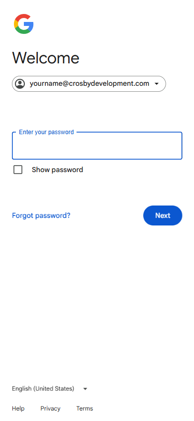

Adding your Crosby email to the Gmail app
The most natural fit for your @crosbydevelopment.com Workspace email on your phone. Same Google ecosystem on both ends.
Before you start
- Android: The Gmail app is already installed. Look for the white envelope with the red "M".
- iPhone: Open the App Store, search Gmail, and tap Get. Install it before continuing.
- You can have your personal Gmail and your Crosby Workspace account in the same app — switch between them with one tap.
Adding your Crosby account
Open the Gmail app
Tap the Gmail icon to open it. If this is your first time opening it, tap Sign in and skip to step 3.
Tap your profile picture
In the top-right corner, tap the circle showing your initials or photo. A small menu drops down.
Tap "Add another account"
In the menu, tap + Add another account.
Choose Google
On the "Set up email" screen, tap Google at the top of the list.
iPhone only — "Continue" to sign in
On iPhone, you'll see a "Gmail" wants to use accounts.google.com to sign in" pop-up. Tap Continue.
Enter your Crosby email
Google's sign-in page opens. Type your full address — yourname@crosbydevelopment.com — and tap the blue Next button.

Enter your password
The next screen says Welcome and shows your Crosby email. Type your Workspace password and tap Next.

Complete 2FA (if prompted)
If 2-factor authentication is on, confirm via the prompt on your phone, a text code, or your authenticator app.
Accept the terms
Tap I agree to Google's terms (you may not see this if you've signed in to Google on this phone before).
You're in
The app returns to your inbox — already showing your Crosby mail. To switch between accounts (e.g., personal vs Crosby), tap your profile picture top-right.
Make it nicer to use
Turn on notifications
If iPhone asks "Allow Gmail notifications?" — tap Allow. To change later: Settings → Notifications → Gmail.
Switch the default account for compose
In Gmail, tap ☰ menu (top-left) → scroll to the account you want as default. The compose button (✏) then uses that one by default.
Show both inboxes at once
Tap ☰ menu → All inboxes at the top. You'll see personal and Crosby mail in one combined view.
Troubleshooting
| Symptom | Fix |
|---|---|
| "Couldn't find your Google Account" | Check spelling. If it still fails, your Workspace account may not be ready yet — call us. |
| Password rejected | Tap Forgot password?, or call us to reset. |
| I tapped "Other" by mistake and it's asking for IMAP server settings | Back out and choose Google instead. The Crosby account is a Google account. |
| No new-mail notifications | iPhone: Settings → Notifications → Gmail → turn on. Android: long-press the Gmail icon → Notifications. |